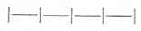

Kant: AA XIV, Physik und Chemie. , Seite 396 |
|||||||
Zeile:
|
Text:
|
|
|
||||
| 01 | Erde, die im Wasser auflöslich ist, ist saltz (Kalkspath); wenn sie Luft | ||||||
| 02 | starker Anzieht, verläßt sie das Wasser und hört auf, in diesem Zustande | ||||||
| 03 | Saltz zu seyn. Erde, die im Feuer (g phlogiston ) auflöslich ist, ist metallisch. | ||||||
| 05 | (g Beyde, Saltze und phlogiston, machen die chemische potentien | ||||||
| 06 | aus ). | ||||||
| 07 | Von den Elementen. | ||||||
| (g | |||||||
| 08 | Natürliche Theologie (g der transscendentalen opposita ) | ||||||
| 09 | (g Cosmotheologie ) metaphysisch | ||||||
| 10 | Natur theologie oder physico theologie | ||||||
| ) | |||||||
| 11 | Geschichte der Natur oder der Naturordnung der Zeit nach. | ||||||
| 12 | Geschichte der mechanischen und die der organischen Naturen. | ||||||
| 13 |  Des Weltbaüs im Großen, des Erdkorpers, Berge etc. |
||||||
| 14 | Der Pflantzen und thiere ihrem Daseyn und speciebus nach. | ||||||
| [ Seite 394 ] [ Seite 397 ] [ Inhaltsverzeichnis ] |
|||||||
;){kind=link}